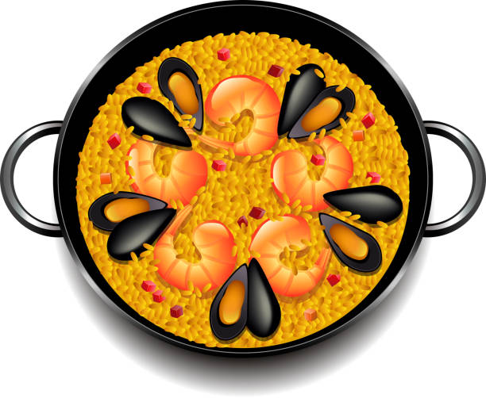

🥘 PAELLA POPULAR EL 10N
El martes 10 de noviembre hacemos paella popular en la Noche en Verde. Hay que coger fuerzas para la huelga educativa del 11N, y qué mejor manera que comer juntxs.
📍 Cafetería de la Facultad de Ciencias de la Educación · 14:00
💰 Aprox. 5€ la ración
¡Apúntate para que podamos calcular cantidades! 👇
¡Pásala a tus compañerxs!